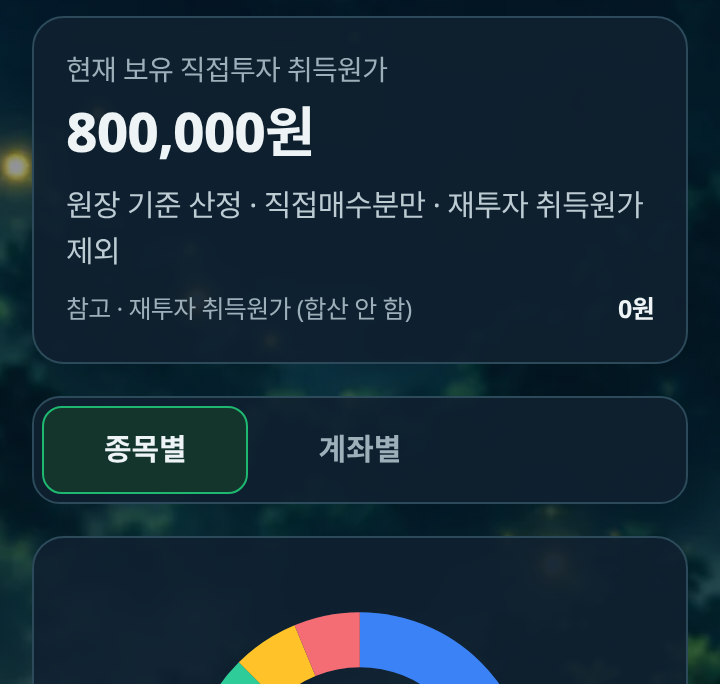
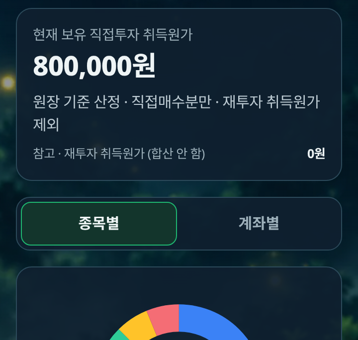
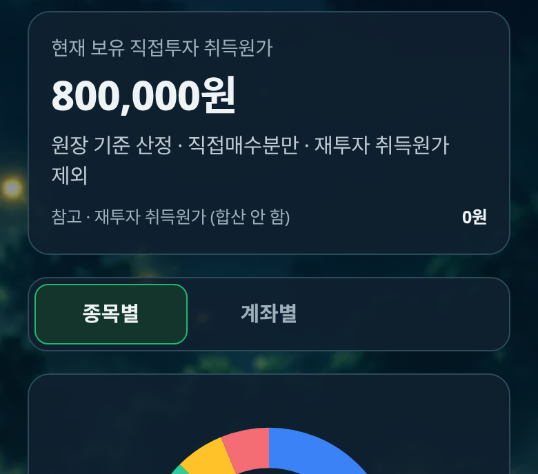
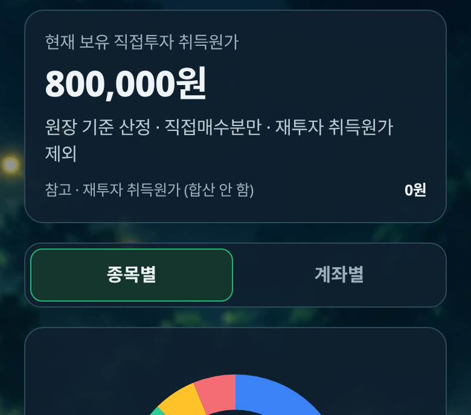
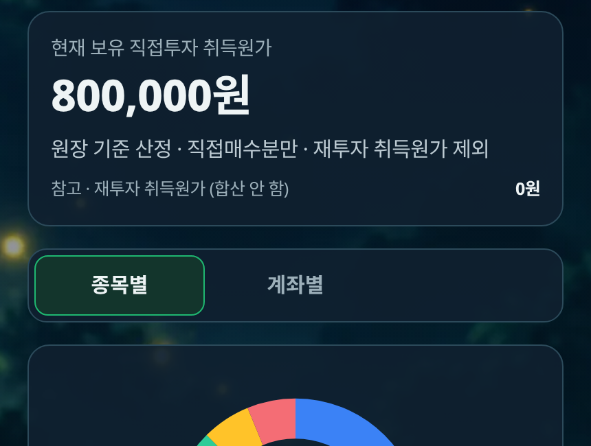
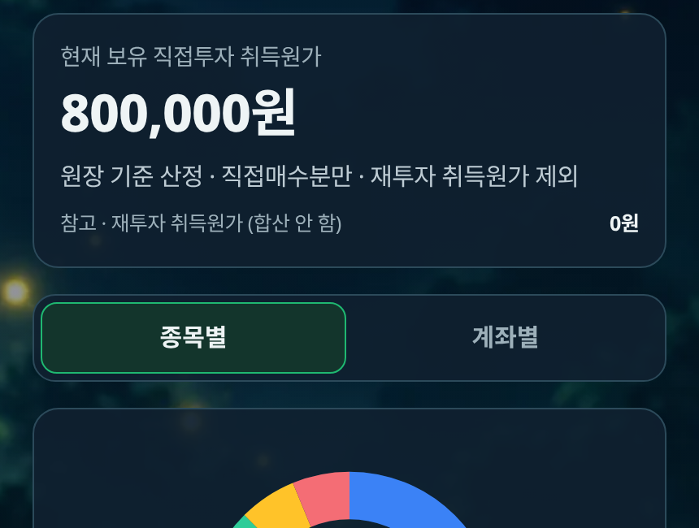

상태: v5.3 개발 후보(미세수정) · 앱 커밋 bdb16e2(기준 8da64ac) · SW 캐시 donnaemsae-asset-hub-20261013-mobileui-v53c · 비서실장 독립 검수 아님
원인: 공통 .mu-tabs가 3열 그리드인데, 이 탭은 버튼이 2개라 오른쪽 1/3이 비어 있었고 텍스트가 왼쪽으로 쏠려 보였음(버튼 안의 텍스트 자체는 이미 중앙).
수정(CSS 전용, mobile-ui-v1.css): body.mu .mu-tabs:has(> button[data-comp])만 2열로 바꾸고, button[data-comp]에 flex 중앙정렬. 다른 탭은 선택자에 걸리지 않음.
| 폭 | 버튼 2개 차지폭/래퍼 내부폭(전) | (후) | 래퍼폭 = 카드폭 | 탭 묶음 중심−카드 중심(전→후) | 텍스트 중심−버튼 중심(후) | 버튼 |
|---|---|---|---|---|---|---|
| 360 | 210.66 / 318 (66.2%) | 318 / 318 (100%) | 328 = 328 | -53.67 → 0.0 | 0, 0 | 157×44, 1줄, 넘침 없음 |
| 390 | 225.33 / 340 (66.3%) | 340 / 340 (100%) | 350 = 350 | -57.34 → 0.0 | 0, 0 | 168×44, 1줄, 넘침 없음 |
| 412 | 240 / 362 (66.3%) | 362 / 362 (100%) | 372 = 372 | -61.0 → 0.0 | 0, 0 | 179×44, 1줄, 넘침 없음 |
| 430 | 252 / 380 (66.3%) | 380 / 380 (100%) | 390 = 390 | -64.0 → 0.0 | 0, 0 | 188×44, 1줄, 넘침 없음 |
카드 내부폭(패딩 제외)은 카드폭−34px. 래퍼는 이전과 같이 카드 바깥폭과 일치하고, 버튼이 래퍼 내부를 100% 채움.






before.json · after.json(로컬) · live.json · measure.py · reg_live.log · v53a_live.log · reg_local.log · v53a_local.log